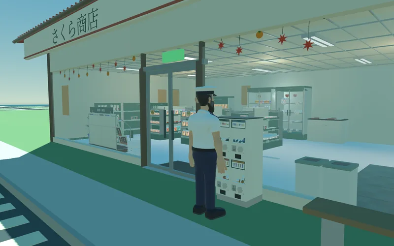
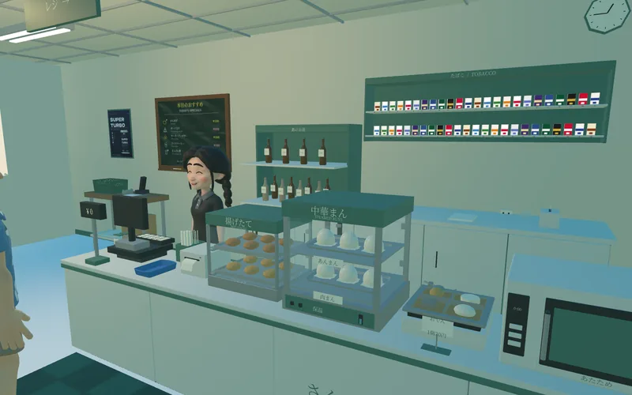
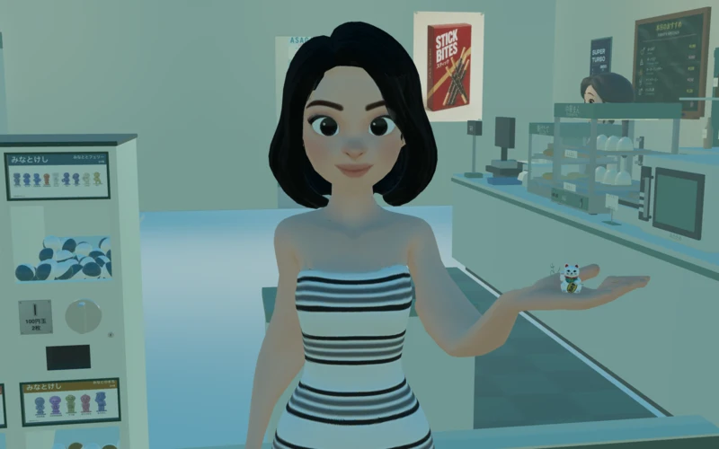
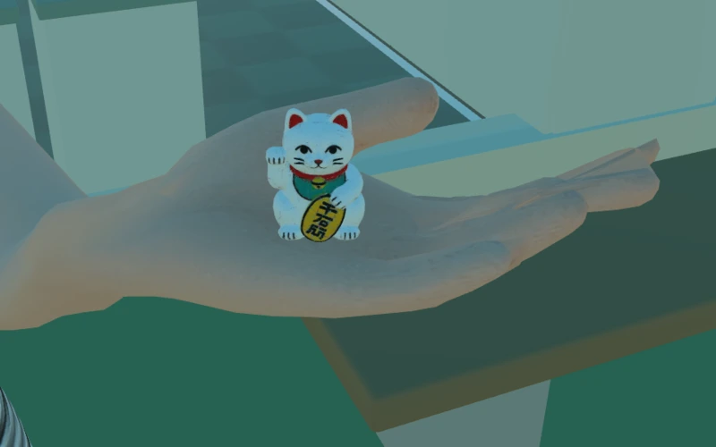
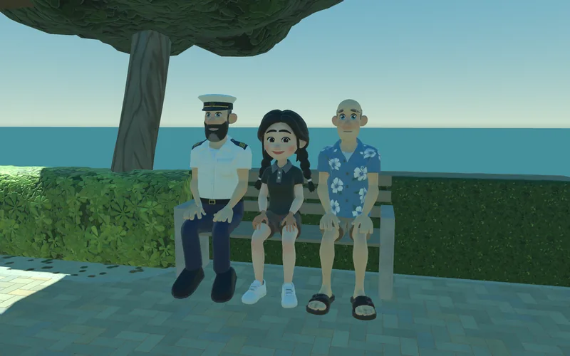
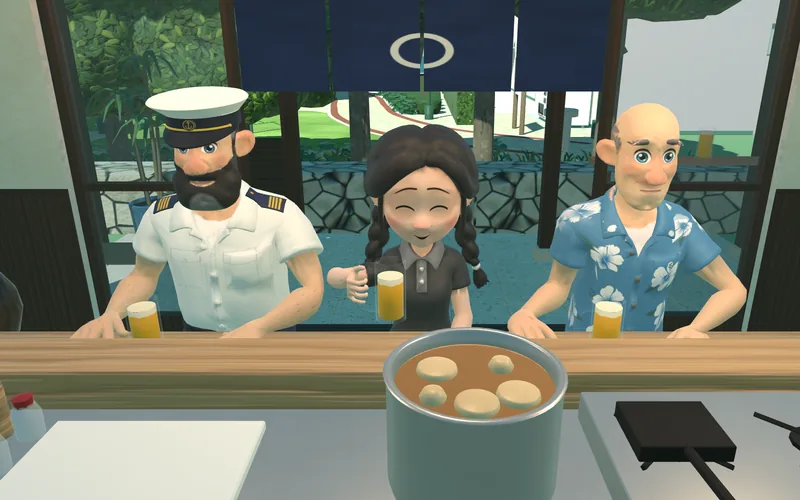

Minato · Harbour Road
Sakura Shōten
Halfway along Minato’s harbour road, Thuận keeps the coffee cold and the buns warm. Stop in on your way to the ferry, or take the path round the back to the park.
Visit Sakura

Inside Sakura
The morning regulars
Johansson comes in for coffee and batteries. His father Erik sometimes stops by after the Minato Maru ties up. If you’re early, there’s a good chance the buns are just coming out.

Under the canopy
A little surprise
Four capsule machines stand by the glass door. The cards show little figures from the island. Thảo found a little lucky cat.


Behind the shop
A bench in the shade
Follow the path past the vending machines. There’s a foot bath and a pavilion, and beyond the lawn you can watch the small islands out at sea.
Over the quay
The ferry from the office
There’s a ferry timetable pinned beside the desk. Look up from the ledger and the Minato Maru is just across the road.

Past the park
An evening at Thảo’s
There are only a few seats at the izakaya. Thảo pours the beer, the oden pot stays warm, and there’s usually a familiar face at the counter.